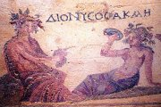
Dionısos byl bohem vína, z nábo�enskıch oslav na jeho poèest se vyvinulo øecké drama.
Demeter, Persefoné a Dionısos byli øeètí bohové. Co o nich víš?
|
ANTICKÉ DIVADLO
Antické divadlo zpracovává námìty z mytologie. Koøeny dramatu musíme hledat v nábo�enskıch slavnostech, které mìly nejrùznìjší podobu. Ve starovìkém Øecku to byla napø. eleusinská mystéria, olympijské hry nebo dionısie. Eleusinská mystéria byly tajné zasvìcovací obøady, které se konaly v záøí a trvaly 9 dní. Jejich souèástí bylo procesí se sochami bohù Demeter, Persefony a Dionısa, které doprovázel zástup dìvèat a chlapcù, pantomimické pøedvádìní sestupu Persefony do podsvìtí a zpìv písní. Olympijské hry mìly nejen pøímé úèastníky (sportovce), ale také diváky. Soutì�ilo se na stadionech v rùznıch sportovních disciplínách. Také v Øímì mìlo soupeøení pøed diváky velkou tradici, nábo�enství ale ustupuje zábavì a dramatikové vycházejí z øeckıch her.
|
Thespis (6. stol. pø.n.l.)
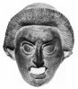
První dramatik Thespis oddìlil od chóru (sbor recitátorù), kterı pøednášel dithyramby (oslavné hymny na Dionısa), sólistu, a tak vznikl první dialog mezi sborem a jedním hercem. Thespis prı vymyslel masky a vystupoval na voze v podobì lodi. Thespidova kára se stala symbolem koèovného �ivota komediantù.
|
Øecké divadlo a drama
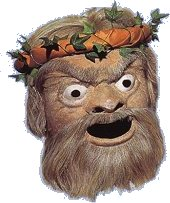
Rekonstrukce divadelní masky

|
ØECKO
Velké dionısie zavedl v roce 534 pø.n.l. athénskı tyran Peisistratos. Tyto nábo�enské slavnosti se konaly v Athénách v�dy na jaøe. Šlo vlastnì o soutì�ní klání dramatikù, kdy ka�dı autor musel napsat tragickou trilogii. Vítìznı dramatik získal vìènou slávu a úctu všech obèanù. Kromì tragédií se pøednášely dithyramby a pro odlehèení se pøedvádìly komedie a satyrské hry. Ka�doroènì se za 5 dní sehrálo 26 novıch her, reprízy se nekonaly. Divadelní hry byly veršované, ale vìtšina dramat se bohu�el nedochovala, èasto známe pouze jejich zlomky.
Organizace Velkıch dionısií byla vìcí polis a pøístup na tyto nábo�enské slavnosti mìli všichni obèané (do amfiteátru se vešlo více ne� 15 000 divákù). Na jejich pøípravì se podílelo minimálnì 1000 osob. Nejdùle�itìjší byli autoøi dramat, dále chorégové (obèané, kteøí vydr�ovali chór a celou hru financovali), èlenové chóru, herci a rùzní pomocníci. Nejvíce bylo zpìvákù dithyrambù.
Základem divadelních pøedstavení byl chór (sbor recitátorù), kterı komentoval dìj hry, a dva (pozdìji tøi) herci. Ti museli uhrát všechny postavy ve høe. Proto�e pøedstavovali rùzné mu�e i �eny, pou�ívali pro odlišení jednotlivıch postav masky. Velkı otvor na místì úst slou�il k zesílení hlasu, i kdy� akustika amfiteátrù (divadel) byla obdivuhodná. Aby diváci dobøe vidìli, mìli herci na nohou vysoké podešve nebo špalíèky (kothurny). Vyspìlá byla i jevištní technika (jeøáb pro létání, propadlištì, stroje na hromy a blesky atd.).
|
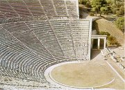
Nejzachovalejší øeckı amfiteátr se nachází v Epidauru. Narozdíl od zastøešenıch divadel (odeion) se amfiteátry èasto stavìly ve volné krajinì.
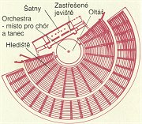
Pùdorys divadla v Efesu
|
Tragédie
Patronkou tragédie byla Múza Melpomené.
Pùvodní vıznam slova tragédie je kozlí píseò. Kozel byl obìtním zvíøetem a Satyrové, kteøí doprovázeli boha Dionısa, byli napùl lidé a napùl kozlové. První tragédii napsal Thespis (534 pø.n.l.). Nejstarším dochovanım dramatem jsou Aischylovi Peršané (472 pø.n.l.).
Osud
Námìty øeckıch tragédií zpracovávají známé mytologické pøíbìhy, ale jejich hlavním tématem je osud. Hrdinové zdánlivì jednají podle své vlastní vùle, ale nakonec se uká�e, �e osud, kterı jim urèili bohové, se v�dycky naplní. A� u� se mu sna�í bránit nebo ne. Osud se pøipomíná prostøednictvím vìšteb, snù a zásahù bohù do �ivota jednotlivıch postav. Protivení osudu má tragické následky.
Pokus se na základì vybranıch øeckıch tragédií urèit, jakı byl osud hlavních postav.
|
Aischylos: Oresteia (Agamemnon, Obì� mrtvım, Usmíøení)
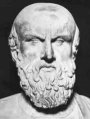
Hlavní postavou trilogie Oresteia je Orestes. První èást (Agamemnon) zaèíná slavnım návratem krále Agamemnona domù po porá�ce Tróje, jeho man�elka Klytaimestra ho ale dá vzápìtí zavra�dit, aby pomstila smrt své dcery Ifigenie. Ve druhé èásti (Obì� mrtvım) pøijí�dí do Argu Agamemnonùv syn Orestes, aby splnil pøíkaz boha Apollona a pomstil smrt svého otce. Krátce se setká se svou sestrou Elektrou, potom vstoupí do paláce, zabije matèina milence i samotnou Klytaimestru a prchá pronásledován bohynìmi pomsty Erinyemi (Líticemi). Poslední èást (Usmíøení) popisuje Orestùv pøíchod do Athén, kde prosí bohyni Athénu, aby rozsoudila jeho spor. Koná se soudní pøe, ve které Erinye vystupují jako �alobkynì a Apollon jako obhájce. Orestes je nakonec osvobozen a øetìz krevní msty je pøetr�en.
Co víš o bozích Athénì a Apollonovi?
|
Aischylos (525-456 pø.n.l.)
Aischylos je pova�ován za zakladatele klasického dramatu, proto�e kromì prvního herce (protagonisty) pøidal do svıch pøedstavení herce druhého. Tak se zrodil jevištní dialog.
Je autorem jediné tragické trilogie (Oresteia), která se dochovala do dnešních èasù. Dále se zachovala dramata Prosebnice, Peršané, Sedm proti Thébám a Spoutanı Prometheus.
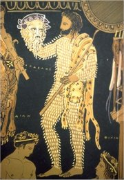
Herec s maskou
|
Aristoteles: Poetika
Teorií umìní (vèetnì dramatu) se zabıval filozof Aristoteles (384-322 pø.n.l.) ve svém pojednání Poetika.
Podle Aristotela tvoøí ideální drama pìt èástí:
expozice (úvodní pøedstavení postav a první napìtí), kolize (stupòování napìtí), krize (vrchol konfliktu), peripetie (obrat v dìji, u tragédie zdánlivì š�astnı, u komedie naopak), katastrofa (rozuzlení). Toto schéma bezezbytku naplòuje Sofoklova Antigona, ale ne v�dy se ho autoøi divadelních her dr�eli.
Dalším pravidlem, které mìli dramatikové respektovat, byl zákon trojí jednoty: místa, èasu a dìje (dìj se mìl odehrávat na jednom místì, bìhem jednoho dne a musel bıt zachován èistı �ánr tragédie nebo komedie). Autor tedy musel všechny osudy postav v minulosti a na jinıch místech pøevyprávìt formou retrospektivy, �ánr tragikomedie nebyl povolen.
Nejvyšším cílem umìní je podle Aristotela dosa�ení katarze (oèištìní).
Èást Poetiky pojednávající o komedii se bohu�el ztratila.
|
Sofokles: Král Oidipus
 Mìsto Théby postihne strašlivı mor a jeho král Oidipus se dozvídá od vìštcù, �e pøíèinou je to, �e v nìm �ije vrah pøedchozího krále Laia. Oidipus se ho rozhodne nají a potrestat, ale vìštec Teiresias oznaèí za vraha samotného Oidipa... Ten se postupnì dopátrá, jak se vše sebìhlo: Podle vìštby mìl novorozenı syn krále Laia svého otce zabít a vzít si vlastní matku Iokasté za man�elku, ale pastıø, kterı ho mìl usmrtit, se nad dítìtem slitoval. Oidipa se ujal korintskı král a vychoval ho jako vlastního syna. V dospìlosti Oidipus radìji opustil své domnìlé rodièe, aby se vyhnul opakované vìštbì. Na cestì zabil neznámého cizince (vlastního otce), rozluštil hádanky Sfingy, která su�ovala Théby, a získal za odmìnu královskı trùn i ruku královny-vdovy (vlastní matky). Kdy� se o tom oba dovìdí, Iokasté spáchá sebevra�du a její syn-man�el Oidipus se oslepí a opouští Théby.
Mìsto Théby postihne strašlivı mor a jeho král Oidipus se dozvídá od vìštcù, �e pøíèinou je to, �e v nìm �ije vrah pøedchozího krále Laia. Oidipus se ho rozhodne nají a potrestat, ale vìštec Teiresias oznaèí za vraha samotného Oidipa... Ten se postupnì dopátrá, jak se vše sebìhlo: Podle vìštby mìl novorozenı syn krále Laia svého otce zabít a vzít si vlastní matku Iokasté za man�elku, ale pastıø, kterı ho mìl usmrtit, se nad dítìtem slitoval. Oidipa se ujal korintskı král a vychoval ho jako vlastního syna. V dospìlosti Oidipus radìji opustil své domnìlé rodièe, aby se vyhnul opakované vìštbì. Na cestì zabil neznámého cizince (vlastního otce), rozluštil hádanky Sfingy, která su�ovala Théby, a získal za odmìnu královskı trùn i ruku královny-vdovy (vlastní matky). Kdy� se o tom oba dovìdí, Iokasté spáchá sebevra�du a její syn-man�el Oidipus se oslepí a opouští Théby.
|
Sofokles (496-406 pø.n.l.)
Sofokles zavedl tøetího herce a omezil vıznam chóru. Z jeho 123 her se dochovalo pouze sedm (Aias, Antigona, Trachiòanky, Král Oidipus, Elektra, Filoktetes a Oidipus na Kolónì).
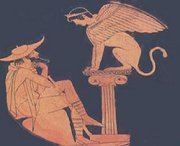
Sfinga a Oidipus
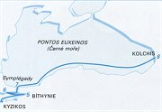
Cesta argonautù za zlatım rounem
|
|
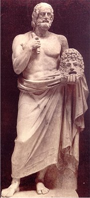
|
Euripides: Médea
Po tìchto slovech se zaèíná odvíjet dìj hry, ve které zhrzená Médea spáchá nejhorší z mo�nıch zloèinù. Médea a Iáson se po návratu z Kolchidy skrıvají na dvoøe korintského krále Kreonta. Kreon nabídne Iásonovi ruku své dcery, kdy� Médeu zapudí. Zhrzená Médea pošle Iásonovì nastávající otrávené šaty, které zahubí ji i Kreonta. Navíc zavra�dí oba své syny a Iásonovi nedovolí, aby je pohøbil.
|
Euripides (480-406 pø.n.l.)
Euripides pou�íval k rozuzlení spletitého dìje svıch her zásah boha, kterı se snesl na scénu v dùmyslném stroji jako deus ex machina. Stıkal se se Sokratem a dalšími filozofy a zanechal nám 18 her (napø. Médea, Ifigenie v Aulidì, Ifigenie v Tauridì, Hippolytos, Bakchantky, Andromaché, Trójanky...).
Co se dozvídáme z úvodních veršù Médey?
|
Komedie
Patronkou komedie byla Múza Thalie. Název komedie (píseò kómu) je odvozen od veselého prùvodu (kómu) boha Dionısa. Šlo o hry s komickou zápletkou i rozuzlením. První komedie byla uvedena v roce 487 pø.n.l., poslední dochovanou komedií je Aristofanùv Plutos (388 pø.n.l.).
Satyrské drama
Satyrské drama bylo parodií na tragédii. Vystupovali zde bohové, ale jejich vlastnosti byly zámìrnì zesmìšòovány. Kromì nich se zde objevují rùzní podvodníèci a nadpøirozené bytosti. Chór tvoøil sbor Satyrù se silénem v èele. Dochovala se pouze jedna satyrská hra – Kyklóps od Euripida a zlomek Sofoklovıch Slídièù.
|
Aristofanes: �áby
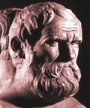
Aèkoliv to název nenapovídá, Aristofanova komedie �áby vypráví o sporu dvou dramatikù – Euripida a Aischyla. Bùh Dionısos hledá do svého divadla velkého dramatika, ale po smrti tøí nejvıznamnìjších autorù tragédií nemù�e �ádného najít. Vypraví se proto v pøestrojení za Hérakla do podsvìtí, kde soupeøí Euripides s Aischylem o místo nejlepšího básníka. Pøesto�e Dionısovım favoritem byl první z nich, v klání vítìzí Aischylos, proto�e jeho verše jsou záva�nìjší. Dionısos proto vyvede z podsvìtí jeho.
Aristofanes: Lysistrata
Tato komedie se hrála bìhem peloponéské války. Hlavní hrdinkou je Athéòanka Lysistrata, která chce ukonèit válku mezi Athénami a Spartou. Domluví se s ostatními �enami, �e budou svım mu�ùm odpírat man�elské povinnosti, dokud neuzavøou mír. �enám se dokonce podaøí obsadit athénskou Akropoli a zmocní se i státního pokladu. Pøesto�e odhodlání �en pomalu opadá, dosáhnou nakonec svého – mu�i radìji pøestanou bojovat.
|
Aristofanes (445-388 pø.n.l.)
O Aristofanovì �ivotì toho moc nevíme, nìkteré ze svıch her uvádìl pod pseudonymem, zachovalo se jich 11 (napø. Jezdci, Vosy, Lysistrata, Mír, Ptáci, �áby, �enskı snìm, Plutos...).
Menandros (343-291 pø.n.l.)
V dobì helénismu se zaèínají hry reprízovat, proto�e novıch dramat byl nedostatek. Prosazuje se tzv. nová komedie, které se vìnoval napø. Menandros. Z jeho her se bohu�el dochovaly pouze zlomky (Èí je to dítì? Dìdek...).
|
Øímské divadlo a drama
Otrok Livius Andronicus pøelo�il nìkolik øeckıch her do latiny a v roce 240 pø.n.l. je poprvé uvedl v Øímì. Pùvodní hry psal Ovidius, ale bohu�el se ztratily. Autorem nejstarších dochovanıch tragédií byl stoickı filozof Seneca (4 pø.n.l. a� 65 n.l.), kterı vyu�íval námìty z øecké mytologie (Phaedra).
Øímané také rozvinuli øecké komické vıstupy bez masek, ve kterıch mohly hrát i �eny – mimos a pantomimos, jejich humor byl ovšem velmi nevybíravı. V Øímì �ili herci na okraji spoleènosti, zatímco v Øecku si jich lidé vá�ili. Hráli zde obvykle otroci a jejich diskriminace ještì vzrostla, kdy� je køes�anskı koncil vyobcoval z církve a vykázal jejich vıstupy z divadel do cirkù.
|
ØÍM
Vládnoucí vrstvy v Øímì se chtìly zalíbit veøejnosti, a proto razily heslo Chléb a hry! �ádnı øímskı obèan nesmìl hladovìt a o zábavu bylo také v�dy postaráno. Lidé mohli navštìvovat cirkus (stavba pøipomínající dnešní stadiony), kde se konaly jezdecké závody trojspøe�í a ètyøspøe�í. O pøestávkách vystupovali akrobati a mimové. Gladiátorské hry byly pùvodnì krvavé nábo�enské obìti a Øímané je pøevzali od Etruskù. Pøi souboji dvou otrokù pøedstavoval jeden rybu a druhı rybáøe (bojoval nahı, vyzbrojen sítí a trojzubcem), vítìz mohl dostat svobodu, o �ivotì pora�eného rozhodovali diváci nebo císaø. Pozdìji se zaèaly v øímskıch amfiteátrech inscenovat pompézní bitvy, vèetnì jezdeckıch nebo námoøních (aréna byla zaplavena vodou), ve kterıch gladiátoøi bojovali mezi sebou nebo s divokımi zvíøaty. Za císaøe Claudia zemøelo pøi jednom z „pøedstavení“ 19 000 lidí.
Také øímské drama bylo hlavnì zábavou, èasto velmi drsnou, proto�e hry musely vycházet vstøíc vkusu publika zvyklého na pøedstavení gladiátorù. Autoøi zpracovávali hlavnì øecké námìty, scény byly vıpravnìjší a zprvu se nepou�ívaly masky, poèet hercù nebyl omezen. Diváci dávali pøednost komediím, ve kterıch vynikali pøedevším Plautus a Terentius.
|
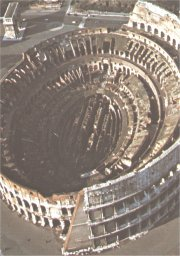
Øímské Koloseum neslou�ilo pro divadelní pøedstavení, konaly se zde krvavé souboje gladiátorù. Vešlo se sem 50 000 divákù.
|
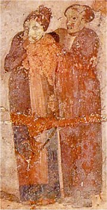
Herci v Plautovì komedii
|
Plautus: Komedie o hrnci
Hlavním hrdinou této komedie je lakomec Euklio, kterı našel hrnec s pokladem, dál ze sebe ale dìlá chudáka. Bohatı soused si chce vzít Eukliovu dceru i bez vìna, ale ta miluje jeho synovce Lykonia. Jeho lstivı otrok ukradne Eukliovi poklad, aby milencùm pomohl.
Závìr této hry se bohu�el nedochoval, ale námìt inspiroval Molièra k napsání komedie Lakomec, která u� konec má. Jakı?
|
Titus Maccius Plautus
(251-184 pø.n.l.)
Plautovy komedie vycházejí z øeckıch pøedloh, dochovalo se jich 21 (napø. Komedie o hrnci, Chlubnı vojín (Tluèhuba), Lišák Pseudolus, Amfitryon...). Zápletku hry Menaechmi o zámìnì dvojèat vyu�il W.Shakespeare ve své Komedii plné omylù.
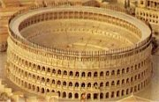
Rekonstrukce Kolosea
|
Internetové stránky
Theatre history, antické divadlo
Múzy, Thalie, Melpomené...
Koloseum, rekonstrukce
Clavmon, pøeklady antickıch dramat
Poznámka: Veškerá uvádìná data jsou pouze orientaèní, pøepis antickıch jmen se èasto liší v délce samohlásek.
|
Doporuèená èetba
Antické hry, Praha 1997 (pøehled èeskıch pøekladù a vıznamnıch inscenací)
Aristotelés: Poetika, Praha 1993
Dostálová, R., Hošek, R.: Antická mystéria, Vyšehrad, Praha 1997
Groh, F.: Øecké divadlo, Praha 1933
Koláø, A.: Øecká komedie, Praha 1919
Meandros: Komedie pro všední den, pøel. Hubatka, Stehlíková, Svoboda, Praha 1983
Øecká dramata, Mladá fronta, pøel. Šrámek, Stiebitz, Praha 1976 (Oresteia, Král Oidipús, Antigoné, Médeia)
Plautus: Amfitryon a jiné komedie, pøel. J.Špricl, Svoboda, Praha 1978
Rak, J.: Antická tragédie, Praha 1985
Stehlíková, Eva: Øecké divadlo klasické doby, Ústav pro klasická studia ÈSAV, Praha 1991
Stehlíková, E.: Øímské divadlo, Praha 1993
|
Sehrajte divadelní pøedstavení v antickém stylu (chór, 3 herci).
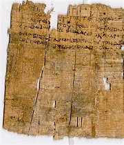
Zlomek Aischylovy hry
|
|